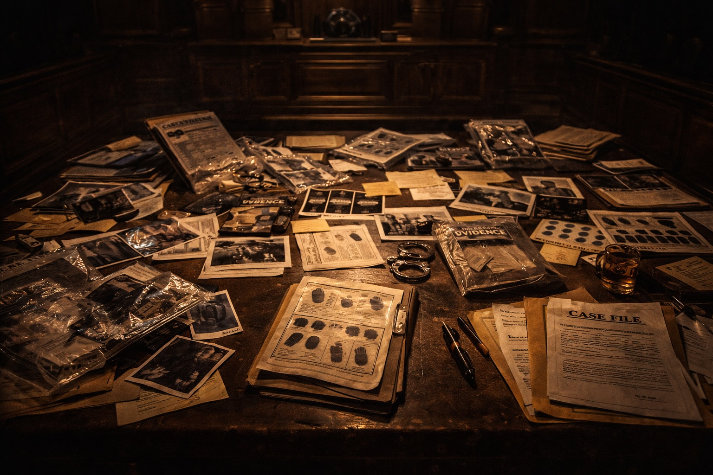

“You might weep, but weep for English justice.”
This is the directive from Paul Marshall QC, in a speech to the University of Law entitled “Scandal at the Post Office.” Uttered in 2021, not in the last century when abuses by coppers in police stations were rife, and the judiciary turned a blind eye to wrongdoing in the false belief it was for the greater good. Nor at a time when owning an Irish accent was indicative of guilt, or being the lone nutter singled you out as a murderer, in the absence of evidence from the crime scene. Spoken decades after I was rudely awakened as to how the “system” works at Wakefield Police Station in R v Robinson.
Mr Marshall QC had acted for a number of sub-Postmasters and sub-Postmistresses (SPM), whose lives had imploded as a result of legal actions taken by a company which touts itself as “the country’s most trusted brand”. The Post Office (PO) hijacked the courts between 2002 and 2014, bringing 736 criminal and civil prosecutions against individuals who, before being clothed in fraud, had been pillars of their communities.
All these private prosecutions were rooted in tainted evidence from an electronic sale, accounting and stock-taking system called ‘Horizon’. It had cost many millions of pounds and, after a pilot scheme, ‘Horizon’ was rolled out across all branches of the PO in the year of Our Lord 2000.
No SMP could opt out. Its use was mandatory and, far worse, the SPM had to sign up to the efficacy of ‘Horizon’ as it churned out figures electronically on a weekly basis. Any shortfalls fell to the SPMs to make good. Either by shoving in their own money or by asking for the sum to be deducted from their future income. A ‘Helpline’ set up by the PO began to be bombarded with alarmed calls from SPM citing software failures. They were met by a mechanical response:
“THE COMPUTER SAYS NO.”
It was a ruthless, authoritarian approach, dished out to much-loved characters in towns and villages across the land, who, as the imbalances increased, borrowed money from friends and relatives to balance the ‘phantom’ books. Some even remortgaged their homes, which would be like a thief returning to burgled premises weeks after the crime to replace stolen items.
It was an abuse of power on the grandest scale. It was no rogue prosecution slipping through an otherwise justly tied net. They amounted to a pandemic of prosecutions, but, unlike with the outbreak of COVID, the legal profession held a vaccine they kept under lock and key. The devastation caused is hard to imagine as SPM began to go to prison, receive suspended sentences, went bankrupt, lived off food banks and lost the roofs over their heads. At least one committed suicide, whilst others did not reach the stress-free retirement which they anticipated. The onset of ill health took them to early graves. Dishonest actions were anathema to them. It is the English legal system which requires a deep clean, not the PO.
A Public Inquiry has been incepted which will be a whitewash, given its remit is centred not upon judges, barristers and solicitors who gave succour to these outrages, but upon the faults of the PO and Horizon software! The fact it is chaired by a retired judge is comical. It would be similar to appointing a bank robber as Chairman of HSBC…..but the best way to rob a bank has always been to own one.
The PO was halted from bringing private prosecutions in 2015, so the retired judge would be keen to assert these miscarriages are a thing of the past……to be regretted. Another lie will be perpetrated and this will be, now the police and CPS must be in charge and sanction criminal prosecutions, the process will be fair!
I tag this postscript onto my Jonathan Davies’ chapter, as this exposed graphically the presence of the police and CPS only provides a multi-national company with a buffer. The police and CPS line up behind the powerful, and tell an Outlaw he is attempting to derail the trial process by heading out on a fishing expedition. As you read in the ‘Gooch’ prosecution, the trial judge, in turn, slams the defence team. Worse than in the PO case, the Outlaw flushed out the network provider’s systems were flawed, but still the legal profession closed ranks and the billing data was permitted to enter the trial process and secured convictions.
You earn your stripes in the thick of battle, where one continues to slash the opposition even though the odds are stacked against you. You maintain fearlessness, even when the opposition’s ranks swell, when a multi-national company pays for first class rail tickets to Lime Street for its armoured battalion to enter the fray.
What price an Outlaw for the SPM? There was not one in the foreground, let alone on the horizon. They were shoved on the same conveyor belt of justice frequented by old lags and youthful gang members. Their screams of innocence were received by their own lawyers as desires, not achievable goals.
The 736 SPM cases are prime examples of the twin evils I have aired in these chapters: -
An unwarranted confidence, on the part of the prosecution and the judiciary, in the guilt of a defendant without a regime-compliant, open-minded investigation of the true quality of the evidence. An inherent over reliance on the idea that technical or electronic evidence must be accurate. Where the judiciary view those who do not come to heel with an early guilty plea as ones “playing the system”.
It should send chills down all our spines that only four SPMs maintained their innocence - and proceeded to trials where they were found guilty. All the others were “pressured” to plead guilty quickly, to obtain up to a third off their sentences. None had committed any crime known to English law. Yet they saw their own team was spineless, and an admission of guilt as a way of bringing their ‘court’ nightmare to an end.
A culture of cutting corners and “going through the motions” on the part of defence lawyers, based to a large extent of the inadequacy of legal aid fees and the relegation of the ‘client’ to the bottom of the list of priorities. Where a “pile ‘em high” approach, with quick turnover of cases, maintains the solvency of a firm of solicitors.
Rights become wrongs when not fought for. Rights mere words, if blood is not spilt in their defence. It is mere window dressing to have the judicial frontage rammed with all manner of baubles, fairy lights and objet d’art, if, once over the threshold, the shop is unmanned.
How dare their Lordships, at the Court of Appeal, issue a damning ruling exposing the PO prosecutions as flawed from the outset? How dare they announce they were “an affront to the conscience of the court”, given it had rejected every appeal lodged by SMP for over a decade.
They would do well, along with their brethren in the lower courts, to recall their judicial oath on entering high office. It is not an oath to do their best in a failing legal system. Nor is it one where hitting targets gains primacy over basic human rights and the promotion of a fair trial process. Where judicial hands are rubbed in glee, as court time and costs are saved by the entering of guilty pleas. A Crown Court is not meant to be a “cattle market”, where inducements are brazenly on offer if citizens plead guilty. The abuses by coppers in police stations mostly ended by the enactment of PACE, but they have now infested court rooms – as if wearing wigs and gowns gives legitimacy to unconscionable behaviour.
The oath demands judges serve Queen Elizabeth II to ensure they “will do right to all manner of people after the laws and usages of this Realm without fear or favour, affection or ill will”. If the Appeal Court was the governing body for the safety of airlines, after 736 wreckages it would be disbanded and those departing would be pilloried.
I wonder if the retired judge will call one judge, one barrister or one solicitor to testify at the Public Inquiry? I quote Mr Marshall QC once more:
“The PO, including its Chairman, its Chief Executive, its Chief Accounting Officers, its Board and its Compliance Audit and Risk Assessment Committee share responsibility for this catastrophe. SO DO A SIGNIFICANT NUMBER of lawyers and judges who failed to understand and properly evaluate the evidence.”
The courts, in both civil and criminal arenas had endorsed what since 2019, after a stunning ruling by Frazer J (running to around 1000 paras), has been outed as “aggressive conduct” by the PO who acted in “capricious and arbitrary ways reminiscent of a mid-Victorian factory owner.” This conduct included “the right to arbitrarily terminate SPM’s contracts and assert strict liability for errors made by the PO’s own computer system.”
Exculpating the legal profession from these miscarriages of justice is akin to the Holocaust being put down to leaking gas cylinders.
I quote Mr Marshall QC once more, as he quite beautifully draws together how fundamental the failings were. It is no more than a first-year law student could attest to:
“…bear in mind that writing on a bit of paper in evidence is only marks on a piece of a paper until first, someone explains what it means and second, if it is statement of fact, someone proves the truth of the fact…..the Horizon computer system was routinely treated by lawyers and judges as though statements of fact were true without bothering to consider how their truth could be established. It was taken as given what a computer record showed was correct. THE SHALLOWNESS OF THIS APPROACH IS REPREHENSIBLE.”
Weeping should be replaced by rage, as the true culprits wander off into the shadows and continue to ply their trade with their reputations intact. No sentient being could assert these failings only attach to the PO prosecutions, as these were ‘outed’ only because they had strength in numbers. They were able to assemble, as the result of an insurance policy, a team of lawyers to match those of the PO to unpick the forensic history of the ‘Horizon’ system. As always, lawyers do not lose out, as they are reaping multi millions of pounds in rectifying these wrongs – pity, when the legal profession was needed most, when the SPM appeared in Crown courts, it failed pitifully as the financial rewards of digging into the prosecution’s case were minimal.
I end by bringing humanity to the fore, in the shape of an SPM called Lee Castleton. Miscarriages occur not in print, but to individuals. Mr Castleton, in 2003, sank his life savings into the purchase of a branch PO in Yorkshire. By 2006, there were ‘phantom’ shortfalls totaling £26k. This man had complained to the ‘Helpline’ and was at his wit’s end over the imbalances in his books. He was to find no checks and balances in the High Court.
He ended up alone, unrepresented, in the High Court facing the might of the PO. They were led by counsel, Richard Morgan of Maitland Chambers, who I note is now……a QC. Mr Morgan subjected this SPM to a six-day trial, in which the trial judge showed little interest in the plight of Mr Castleton.
He duly lost, and was ordered to pay…. wait for it…..£321k in legal costs! The PO had been content to pay the mouthwatering fees of Mr Morgan as the damning ruling handed down by HHJ Harvey could be rammed up the jacksey of any other SPM having the temerity to seek refuge in an English courtroom.
This decent man went bankrupt and his family were destitute for many years. They lived in accommodation without hot water as he could not afford a boiler.
I note, on Mr Morgan’s website, he cites under ‘notable cases’ PO v Castleton! This list is meant to sing the praises of learned counsel and draw in new clientele – not to quote a case which has been ruled as having been unconscionable. HHJ Harvey’s ruling has been found to have been wrong on nearly every point of fact and law.
Do not demand of the Outlaw “how” I can act for criminals. Instead, ask of the solicitors, barristers and judges in the 736 SPM cases:
“How did you fail to protect the innocent?”
Page 1 of 1